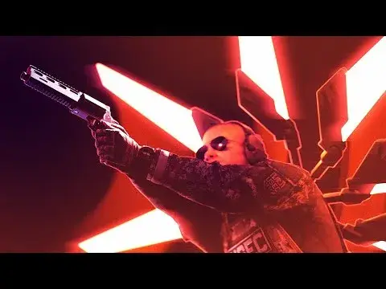

TARKILL
- Downloads
- 4,360
- Favourites
- 0
I made this mod specifically to make this video:

(so expect jank and no real gameplay, no escape menu, can only exit raid through extracts)
This mod attempts to replicate ULTRAKILL movement and some mechanics, you can slide, ricoshot, slam, dash, walljump, slam storage, water skip, etc.
[C] - slide/slam
[Shift] - dash
[V] - parry
[R] - whiplash
[1][2][3] - swap weapons
[CapsLock] - slowmo time
You must have weapons equipped on your character:
- any revolver is ultra revolver with coin
- any shotgun is ultra shotgun (the sawedoff specifically has a reload animation)
- any sniper rifle is ultra railcannon
- any machinegun is ultra machinegun
Additional repos used in this mod:
https://github.com/bmpq/spt-ultravisceral
https://github.com/bmpq/effectlightning
Version
1.0.0
No description was available in the snapshot.